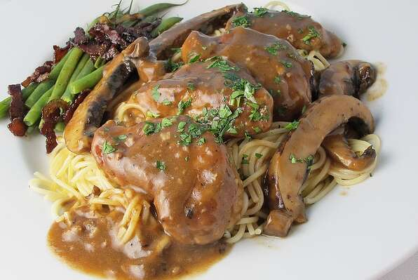

Chicken Marsala

Chicken Marsala is a savory dish the whole family is sure to love!
Chicken marsala (Italian: Scaloppine di pollo al Marsala) is an Italian-American dish of
chicken escalopes in a Marsala wine sauce. It is a variation of traditional Italian
scaloppina dishes, of which there are many varieties throughout Italy. The dish dates to
the 19th century, when it may have originated with English families who lived in western
Sicily, where Marsala wine is produced.
Slices of chicken breast are coated in flour, briefly sautéed, and then removed from the
pan, which is then used to make a Marsala reduction sauce. The sauce is made by reducing
the wine to nearly the consistency of a syrup while adding garlic. The sauce is then poured
over the chicken, which has been kept in a warming oven, and served immediately.
Ingredients
- 8 tablespoons butter, divided
- 2 tablespoons olive oil, divided
- 4 portobello mushroom caps, sliced
- 1 clove garlic, chopped
- 1 tablespoon all-purpose flour
- 1 (14.5 ounce) can beef broth
- 1/2 cup dry Marsala wine
- 1 tablespoon browning sauce
- kosher salt, or to taste
- 1/4 teaspoon ground black pepper, or to taste
- 6 skinless, boneless chicken breast halves - pounded to 1/2 inch thickness
- 1 pinch kosher salt and pepper to taste
- 3/4 cup all-purpose flour, or as needed
Steps
- Preheat oven to 350 degrees F (175 degrees C).
- Melt 4 tablespoons butter and heat 1 tablespoon olive oil in a skillet over medium heat. Cook and stir the mushroom slices in the skillet until tender. Remove pan from heat and set aside.
- Melt 1 tablespoon butter and heat 1 tablespoon olive oil in a saucepan over medium-high heat. Stir in the garlic and cook until tender, then gradually whisk in 1 tablespoon flour. Cook, stirring constantly, for 1 minute.
- Increase heat to high, and whisk in the beef broth, Marsala, and browning sauce. Season sauce with 1/2 teaspoon salt and 1/4 teaspoon pepper. Bring sauce to a boil, and reduce heat to low. Mix in the cooked mushrooms; you'll use the skillet to cook the chicken. Cover saucepan and remove from heat.
- Season chicken with salt and pepper, and dredge chicken breasts in the flour. Over medium heat, melt remaining 3 tablespoons butter in the skillet used to cook the mushrooms. Cook the chicken 2 minutes per side, until browned. Arrange the chicken in the bottom of a 9x13 inch baking dish, and cover with the sauce and mushroom mixture.
- Cover baking dish, and bake 25 minutes in the preheated oven, or until chicken juices run clear.